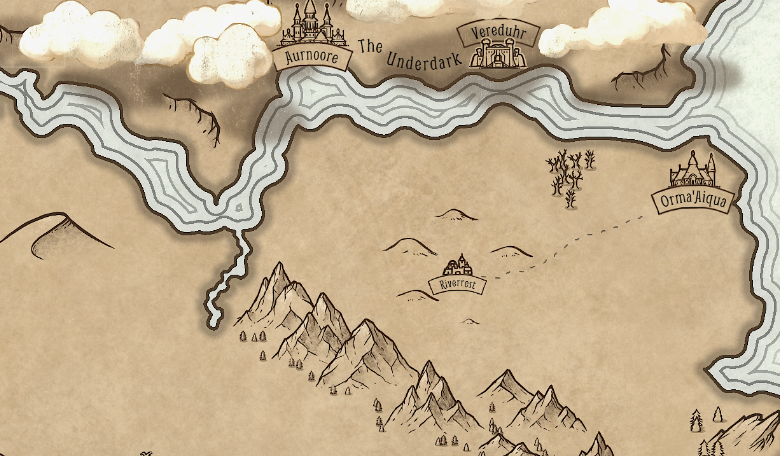

Region
This portion of the Known Eadria map is considered to be within the region called the Lands of Aurnoore.
The region includes Aurnoore, Vereduhr, Orma’Aiqua, Rivercrest, and the land near the Underdark.

A northern region of Eadria, lying at the base of the cliffs.
This portion of the Known Eadria map is considered to be within the region called the Lands of Aurnoore.
The region includes Aurnoore, Vereduhr, Orma’Aiqua, Rivercrest, and the land near the Underdark.
Aurnoore is the capital city of the Lands of Aurnoore.